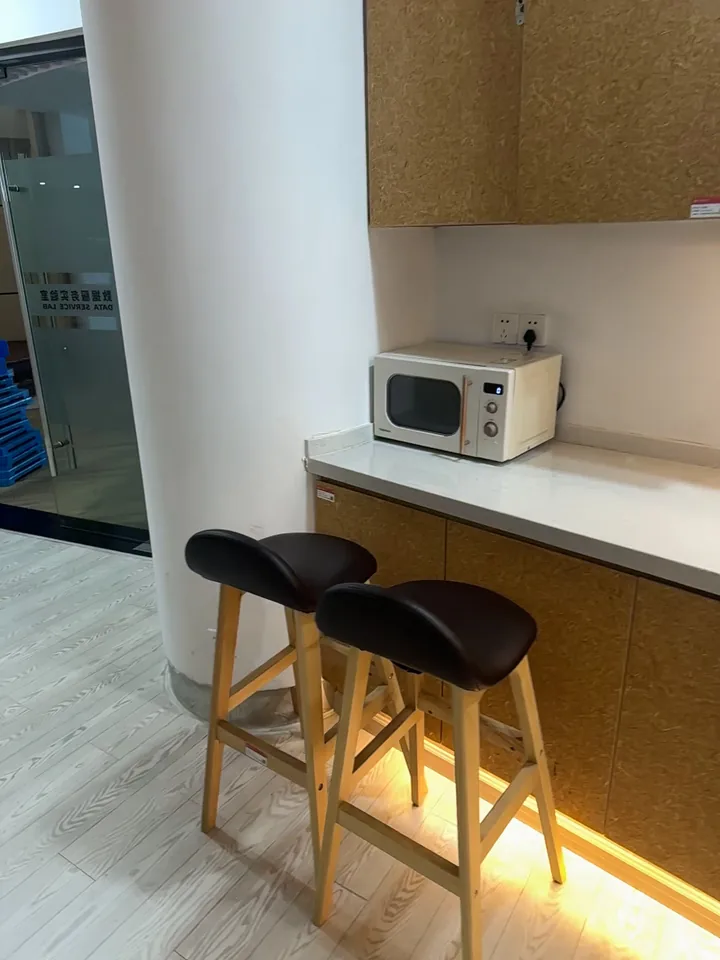
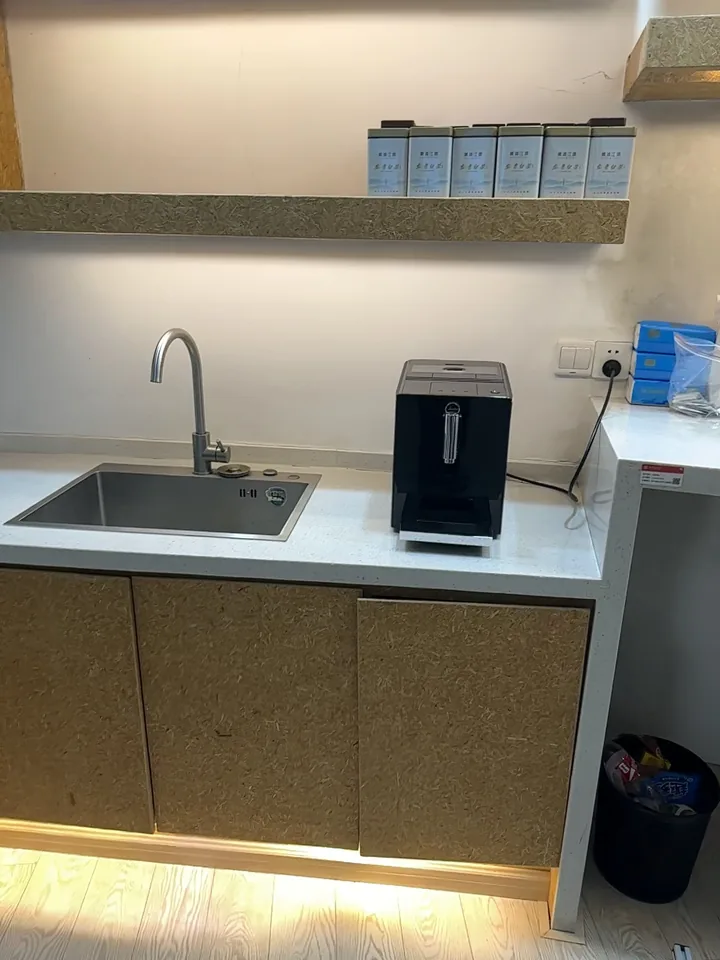
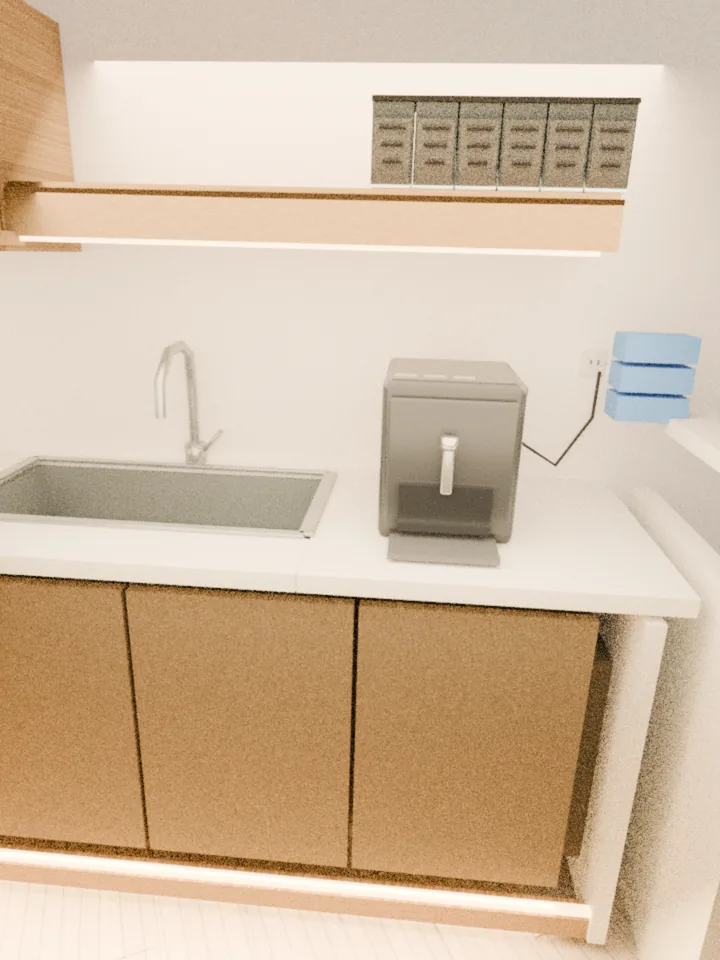
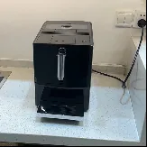
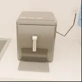
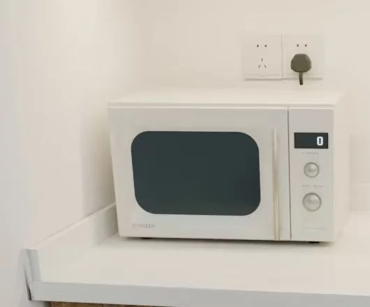
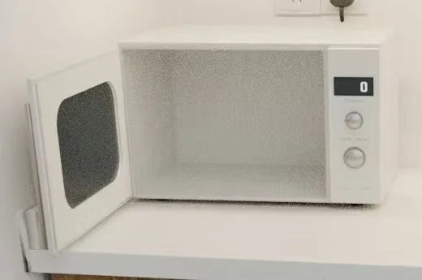
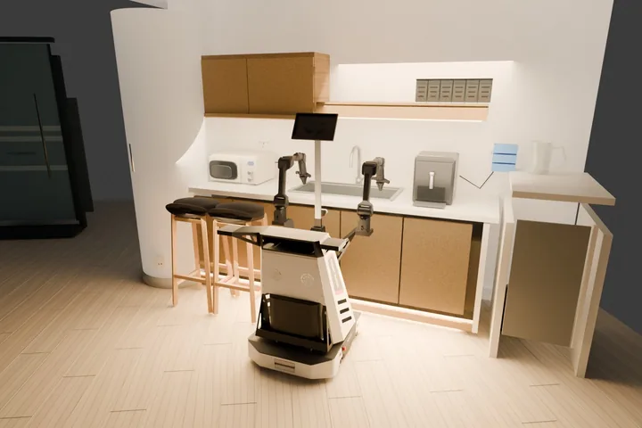
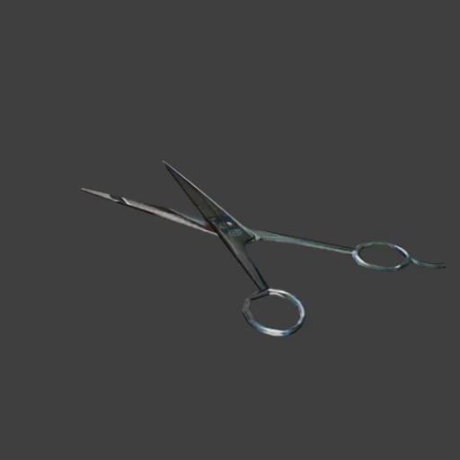

THE VISION
Interactive worlds for embodied intelligence
In recent years, AI has advanced rapidly through a simple but powerful recipe: large-scale pretraining followed by reinforcement learning. Embodied intelligence, however, faces a much harder scaling problem. The physical world is continuous, dynamic, and expensive to interact with; robots must learn not only what they see, but also how objects move, respond to forces, and change through interaction. To bring embodied intelligence into the same scalable learning paradigm, we need environments where such experience can be generated at scale.
Science fiction has long imagined intelligence learning inside virtual worlds. In The Matrix, Neo acquires new abilities through interaction in a virtual environment. This idea may offer a promising direction for embodied intelligence.
Embodied intelligence needs worlds it can interact with, not just worlds it can see.
Real-to-sim-to-real provides a practical path toward this goal: reconstruct real environments in simulation, use them to generate large-scale data and interactive experience for pretraining and reinforcement learning, and transfer the resulting capabilities back to physical robots. However, building such environments remains difficult. Visual realism alone is not enough: reconstructed worlds must also support modification, interaction, articulation, and physical simulation. For embodied intelligence, reconstruction must therefore move beyond generating 3D assets toward building simulation-ready interactive worlds.
INTRODUCING NEOWORLD-3
Introducing NeoWorld-3
We introduce NeoWorld-3, an agentic framework for reconstructing simulation-ready interactive worlds from visual observations. While existing reconstruction systems have achieved impressive visual quality through direct prediction, reconstructing complex structures, interactions, and physical constraints remains challenging. The emergence of large vision-language models and coding agents creates a new opportunity to move beyond this paradigm.
NeoWorld-3 is designed around three core principles: simulation-ready reconstruction, coding-agent based world construction, and object-to-scene scaling. Simulation-ready reconstruction preserves the geometry, articulation, and physical validity required for downstream simulation. Coding-agent based reconstruction enables vision-language models to actively construct and refine worlds through tools. Object-to-scene reconstruction allows the same framework to scale from individual objects to complex environments.
AGENTIC WORLD CONSTRUCTION
Agentic World Construction with NeoMCP and NeoSDK
Most 3D reconstruction methods generate a final representation directly from visual observations. NeoWorld-3 takes a different route: reconstruction is carried out by coding agents that write modeling programs, invoke tools, inspect intermediate results, and modify only the parts that need improvement. This is especially useful for scene reconstruction, where errors are often local—a wrong object geometry or pose should not require regenerating the entire scene.
Observe. Build. Refine.
Real observations


Images, depth & camera poses
Scene agent
NeoMCP + NeoSDK
Geometry constructionDifferentiable execution
Visual inspectionCode editing & rendering
cube() translate() rotate()
Real-Sim scene

REAL
SIMObject handoff
Views · source · context
Author & revise
def build(θ):
body = shape(θ)
add_parts(body)
return objectEditable modeling programs
Refine geometry
Optimize shape parameters
Compare & improve

REAL
SIMReal-Sim visual feedback
Make it interactive


Add parts & joints
Scene integration
Validate object updates
Deploy to the real world
Policy agent
Policy optimization

NeoWorld-3 organizes this process with a hierarchical reconstruction harness. A scene-level coordinator maintains the global scene and decomposes it into scoped object tasks. Each object is handled by a fresh worker with access to its relevant observations and editable state. NeoMCP exposes reconstruction operations to the agent, while NeoSDK provides the underlying geometry, rendering, and optimization primitives. Object reconstruction can therefore be developed and refined independently while remaining grounded in the shared scene.
Before an object update is merged back, the candidate is inspected against its visual evidence and scene context; unsuccessful changes can be revised or rejected. The updated scene then becomes the context for subsequent tasks. In practice, this lets NeoWorld-3 improve complex scenes incrementally, preserving successful reconstructions while concentrating computation and agent reasoning on the parts that remain incorrect.
DIFFERENTIABLE REFINEMENT
Reasoning Meets Gradients: Differentiable Refinement
One challenge in reconstruction is that vision-language models are strong at understanding visual concepts and structural relationships, but precise geometric parameter prediction remains difficult. Even when a model understands what an object should look like, directly predicting highly accurate geometry from numerical parameters is challenging.
NeoWorld-3 addresses this limitation through Differentiable Refinement. The agent first constructs an initial reconstruction, then refines it through differentiable rendering. The rendered result is compared with the original observation, image similarity serves as the optimization objective, and parameters in the generated geometric representation are updated through gradient-based optimization.
This creates a natural division of labor between reasoning and optimization. The vision-language model provides semantic understanding, decomposition strategies, and reconstruction programs, while differentiable optimization provides the numerical precision needed for high-fidelity geometry. Rather than relying on prediction alone, NeoWorld-3 can continuously improve reconstruction through visual feedback.
PHYSICAL VALIDITY
From Geometry to Interaction: Watertightness and Articulation
A visually accurate reconstruction is not necessarily a structurally valid one. Generated geometry can contain open boundaries, self-intersections, or inconsistent connections between parts, while movable components may lack explicit articulation structure. These issues are easy to overlook visually, but they prevent reconstructed objects from becoming reliable interactive assets.
NeoWorld-3 addresses these problems through explicit geometry validation and repair. The system inspects boundaries directly on the native indexed geometry, applies targeted repairs to invalid regions while preserving existing surface attributes, and re-inspects the repaired mesh to verify watertightness rather than relying on implicit remeshing. In parallel, the agent reconstructs articulation by identifying object parts, establishing joint relationships, estimating motion axes and ranges, and correcting invalid configurations.
This produces assets that are not only visually reconstructed, but also geometrically valid and explicitly articulated. The watertight pipeline preserves the original reconstruction while repairing structural defects, and the articulation pipeline captures how individual parts are connected and allowed to move. Together, they turn a reconstructed shape into a structured, interactive 3D asset.
SCENE RECONSTRUCTION
From observations to a reconstructed world
The floor-completed Scene 01 is shown without the ALOHA robot. The video pairs camera-matched excerpts from the original capture with renders of the revised scene.
Unable to load this video. Open video file ↗
INTERACTIVE SCENE 01
Explore the revised world and its structure.
The floor-completed scene opens with its materials and no robot. Click any object to reveal the transparent scene structure and the recorded construction operations behind that object.
click an object for X-ray + code · drag to rotate · scroll to zoom
SIM2REAL TRANSFER
From the simulation twin back to the real robot
This example connects real-world scanning, policy execution in the simulation twin, and the corresponding action on the physical robot.
Unable to load this video. Open video file ↗
ARTICULATED ASSETS
Object articulation
Compare each source image with its interactive reconstruction, then inspect part hierarchies and joint limits using the controls below.

Loading scissors reference…
Loading object…
Revolute joints: degrees · Prismatic joints: normalized scene unitsInteractive kinematic demonstration
QUANTITATIVE RESULTS
Experiments
We compare object and scene reconstruction using visual fidelity, geometric agreement, and multi-object scene quality. DINOv3 is reported for both object and scene reconstruction.
- 01NeoWorld-3 OURS0.6606
- 02VIGA 20260.6351
- 03Codex+BlenderMCP 20250.6245
- 04Articraft 20260.5692
- 01NeoWorld-3 OURS0.7550
- 02VIGA 20260.6547
- 03Codex+BlenderMCP 20250.5736
- 04Articraft 20260.5692
- 01NeoWorld-3 OURS0.0365
- 02VIGA 20260.0680
- 03Articraft 20260.0719
- 04Codex+BlenderMCP 20250.0747
- 01NeoWorld-3 OURS0.6229
- 02VIGA 20260.5803
- 03Codex+BlenderMCP 20250.5658
- 04Articraft 20260.5618
Bars show the measured value relative to the largest value in each metric; labels report original values.For Chamfer Distance, a shorter bar and lower value rank higher.
- 01NeoWorld-3 (full) OURS0.8142
- 02NeoWorld-3 w/ BlenderMCP0.7644
- 03Codex0.7513
- 04Direct GPT0.6817
- 01NeoWorld-3 (full) OURS4.7222
- 02NeoWorld-3 w/ BlenderMCP4.4444
- 03Codex4.2111
- 04Direct GPT3.4722
- 01NeoWorld-3 (full) OURS0.67%
- 02Codex11.61%
- 03NeoWorld-3 w/ BlenderMCP45.41%
- 04Direct GPT45.68%
- 01NeoWorld-3 (full) OURS25.9445 cm
- 02NeoWorld-3 w/ BlenderMCP47.4549 cm
- 03Codex47.6677 cm
- 04Direct GPT107.8875 cm
MLLM Overall = mean of Complete, Layout, and Function (rounded to 4 decimals).Bars show value / largest value in each metric. For P-Pen and OCD, shorter bars rank higher. Labels show original values.
LOOKING AHEAD
Looking Ahead
Language models evolved from generating text to using tools and writing code. We believe 3D reconstruction is undergoing a similar transition. Coding-agent based reconstruction moves beyond directly predicting a final mesh: agents can reason about structure, construct representations, invoke tools, inspect intermediate results, and iteratively refine them.
NeoWorld-3 is a step toward this future. As foundation models improve, we aim to scale this approach from individual objects to complex real-world environments, turning visual observations into simulation-ready worlds for embodied learning and physical interaction. More broadly, we see reconstruction as a key layer in the embodied intelligence stack, connecting the physical world with scalable simulation. If this process can be made scalable, every real-world observation can become the starting point of a new training environment for intelligent agents.
Our long-term vision is to build the foundation for the next generation of embodied intelligence: A world where AI systems can not only perceive and understand, but also interact with and learn within it.